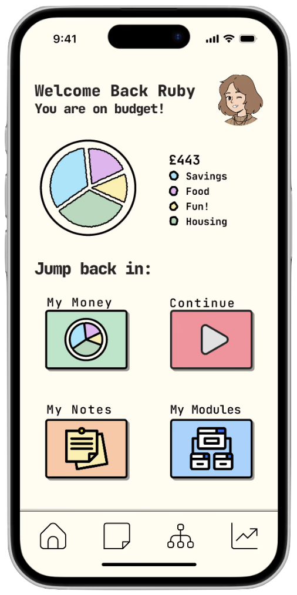
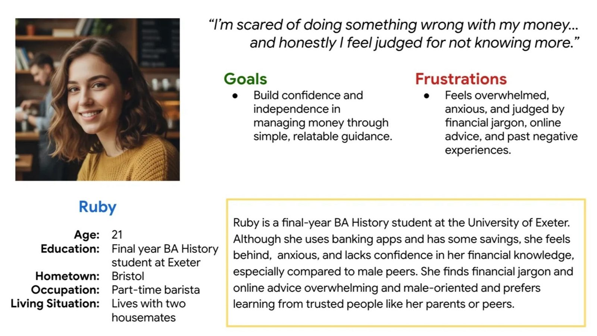
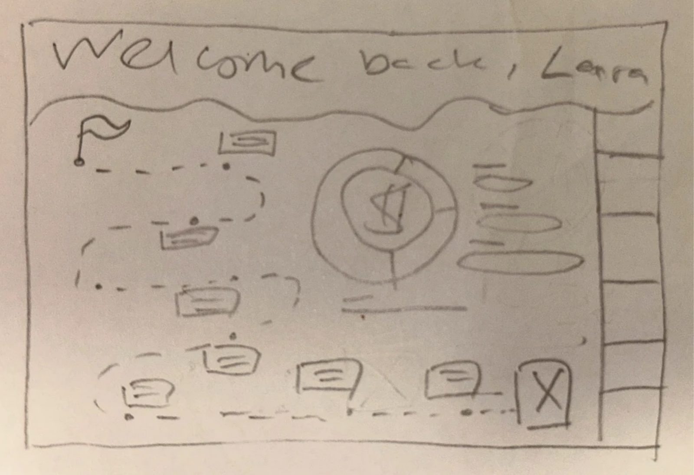
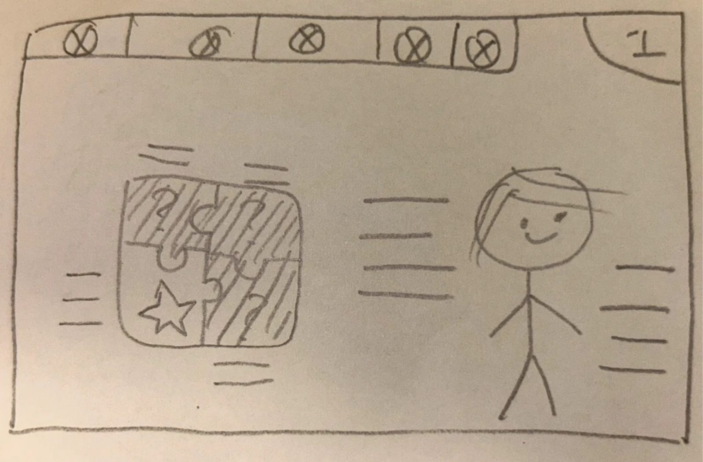
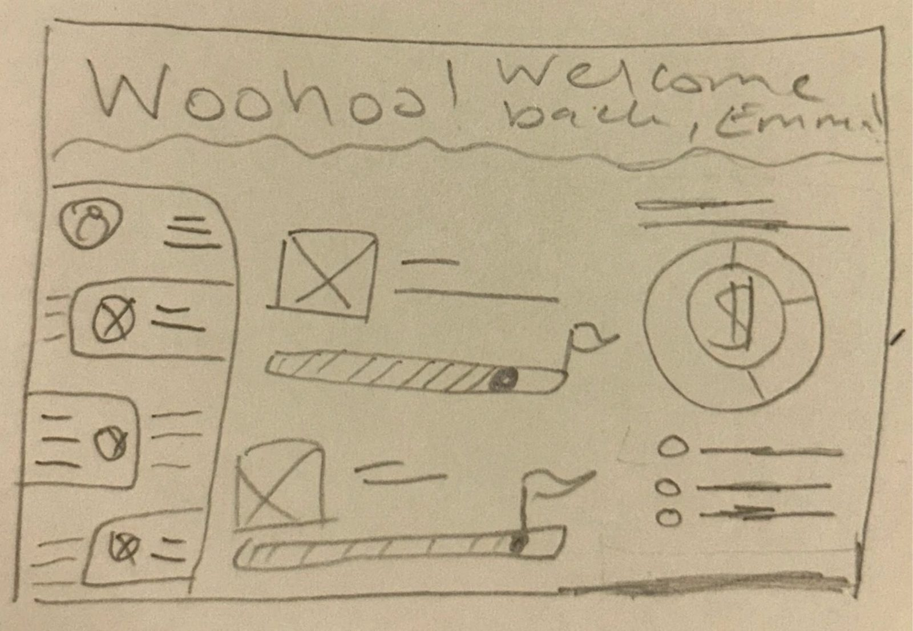
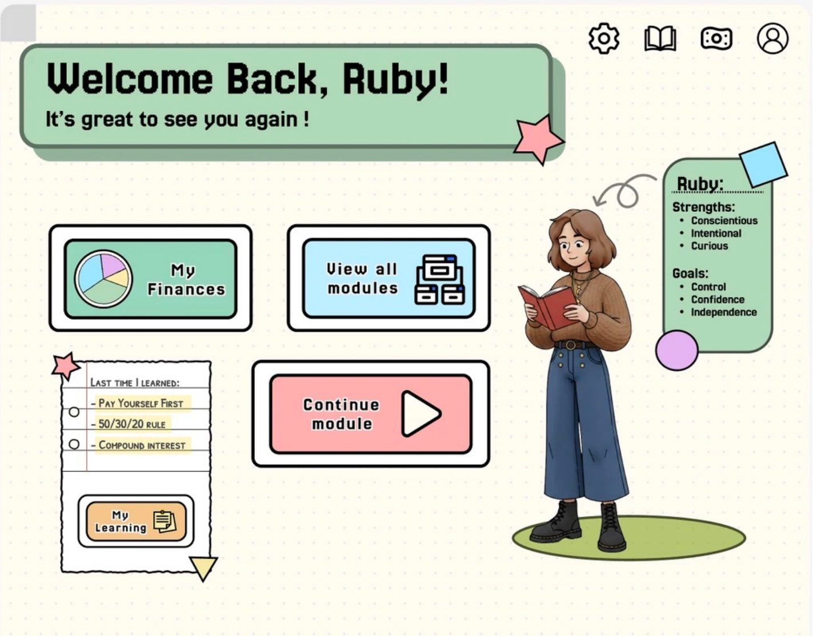
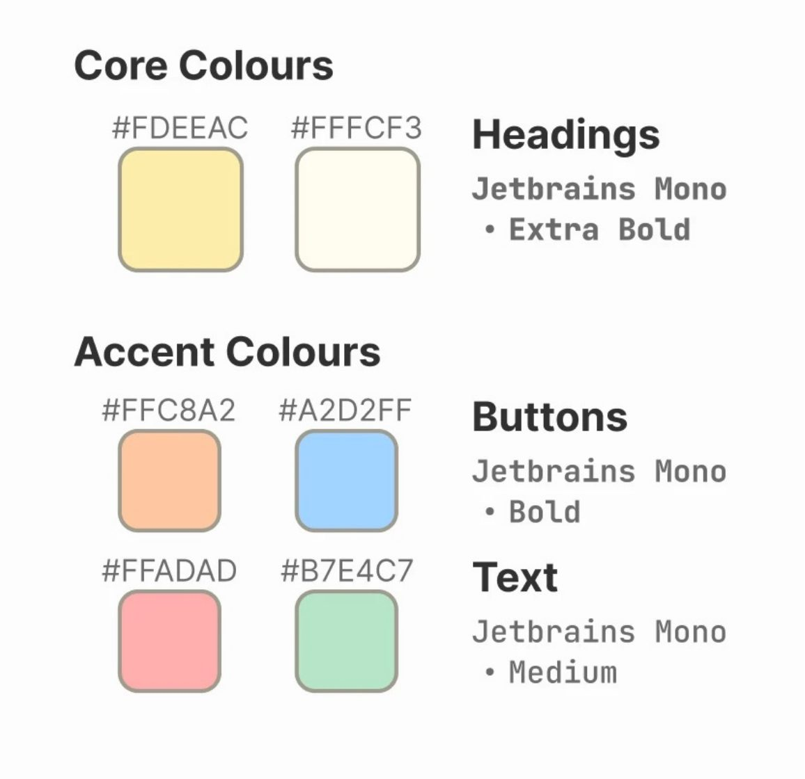

Equil: An Equitable Financial Literacy Tool for Young Women


Financial literacy feels unsafe for young women
- Over half enter adulthood without structured financial education, leaving many unsure where to start.
- Women score lower in financial literacy and confidence than men, even with similar ability.
- This leads to higher anxiety, avoidance of financial planning, and slower confidence growth.
This highlighted the need for supportive, personalised financial education that builds skills and confidence without judgment.
Insight
- Users feel psychologically unsafe — content feels emotionally unsafe, patronising, and judgemental.
- Users carry a heavy cognitive load from discomfort and overwhelm, which prevents action.
- Users feel unrepresented by current content and want personal, simple, trustworthy guidance.
Design decisions
- For psychological safety: a nostalgic, 2000s video-game-inspired UI for familiarity.
- For cognitive load: simplistic navigation and reframing anxieties into strengths.
- For representation: an avatar placing the user in every page, and relatable language.
Outcome
- Users felt soothed by the colours, typography, and general UI.
- Users generally knew how to navigate to learning options and were comforted by the descriptors.
- Users thoroughly enjoyed the avatar element, which elevated their sense of representation.
Limitations
- Users weren't sure whether they'd feel comfortable sharing sensitive financial data.
- Learning materials weren't tested specifically for comprehension of financial concepts.
- Target users were Gen Z women — it's unclear whether this delivery style would appeal to Gen Z men.
Interviews, affinity mapping, and a persona
I conducted 8 semi-structured interviews (4 women, 4 men, aged 20–23) to understand how young adults perceive financial literacy, then synthesised the data using affinity mapping into themes of emotion, behaviour, and motivation. This case study focuses on the female participants, who consistently reported higher anxiety, lower confidence, and greater disengagement.
1. It's emotionally unsafe
Participants felt judged, behind their male peers, and overwhelmed when confronting all they didn't know — so they avoided financial tools, even when they wanted to learn, and relied on their fathers instead.
2. Overwhelm prevents action
The volume, complexity, and jargon of financial information feels intimidating and impossible to navigate — not knowing where to start makes users disengage and postpone decisions.
3. They want trustworthy guidance
Participants didn't want confusing, contradictory content online — they wanted simple explanations, reassurance, and relevance to their life stage and goals.
Core tension: users want financial independence and confidence, but avoid existing tools because they feel overwhelming, biased, and emotionally unsafe.
Meet Ruby
I built a persona to keep the user's motivations, pain points, and context central throughout the design process: Ruby, a final-year university student who needs an intuitive, non-judgemental way to learn financial literacy because she wants to be more independent and feel less anxious and overwhelmed about her finances.

I used "If–Then" logic to connect Ruby's pain points to design goals, then generated 20 "How Might We" questions and selected three to guide ideation:
- Cognitive load — How might we break financial literacy into simple, achievable, relevant steps so Ruby can act without feeling overwhelmed or scared of mistakes?
- Psychological safety — How might we make learning about money feel safe, non-judgemental, and reassuring, so Ruby can build confidence without feeling behind or exposed?
- Representation — How might we design financial guidance that feels made for someone like Ruby, so she feels represented, independent, and in control of her financial future?
Solution: the product helps users by scaffolding, gamifying, personalising, and simplifying financial literacy — measured qualitatively (confidence, anxiety, overwhelm) and quantitatively (financial understanding and real-world behaviour before/after use).
From paper wireframes to a warmer, calmer interface
I started with paper wireframes, focusing first on desktop, since users reported preferring a more "official," sturdy platform for managing their finances. A few ideas worked, and a few didn't:

Kept a personal welcome banner.
Increases engagement and makes the page feel personally addressed.
Cut the learning-journey path.
Felt too visually cluttered, surfacing everything the user hadn't done yet.

Kept a personalised avatar with positive traits.
Reframes anxiety into "conscientious," "curious" — a favourite with test users.
Cut puzzle-piece navigation.
Too visually complex, though a similar layout worked with plain buttons.

Kept a modules bar for simple navigation.
Lets users jump into different things without seeing every detail, cutting decision fatigue.
Cut progress bars & finance summary.
Looked overwhelming as soon as users realised how much they didn't know.
The resulting hi-fi wireframe and lo-fi prototype included a module overview page, a personal finance page, and an all-modules overview — with a large, supportive welcome banner, a simple choice between a learning module or checking finances, and the avatar present throughout.
First round of usability testing
I tested the low-fidelity prototype with five users like Ruby, asking about first impressions, clarity, flow, and their reaction to the avatar.
What worked
The avatar-led experience felt warm and non-judgemental; the welcome banner and bold text felt more welcoming than banking apps they'd used before; the learning path made progress feel sequential and easy to follow.
What needed work
Users felt "overloaded" on the homepage, unsure where to look first between the avatar, instructional text, and bold boxes — the avatar sometimes got missed entirely, and some navigation elements didn't communicate their purpose.
Iterating toward the final design
I revisited the project, using AI tools to explore and refine colour palettes, border-radius values, content structure, hierarchy, and typography — landing on a warm neutral palette with soft accents and rounded shapes, rounded illustrations for a friendly tone, and clear, "digital"-themed typography in a modular layout. Together, these choices contrast the high-pressure feel of traditional finance tools.


Final testing & constraints
Psychological safety & representation
Soft pastel colours and a 2010s-nostalgic aesthetic felt calm and reassuring, in contrast to colder financial tools. The avatar's presence across pages helped users feel represented and reduced feelings of judgement.
Cognitive load
Stronger visual hierarchy, minimal text, and a single primary action per screen made the site feel "down to earth" and simpler than traditional financial resources.
Constraints
- Privacy and data-handling were assumed, not implemented — users consistently raised trust concerns about how their data would be stored, a barrier this project's scope couldn't fully validate.
- Interactions were limited to core flows and onboarding; edge cases and alternative paths were left untested.
- Platform-specific patterns (iOS vs. Android) weren't explored — the prototype prioritised users' preferred device only.
Building the MVP
I've been using Cursor to develop and Vercel to deploy a real version of the product. I currently have an MVP and am working on the content side, making sure it meets user needs alongside developmental and educational psychological principles — I'll add it to this portfolio once it's ready.
Reflections
This project strengthened both my UX process and my confidence as a designer. One of my biggest takeaways was the value of intentionally crafting problem, "If-Then," and "How Might We" statements before ideating — clearly identifying user needs and success metrics was critical to staying on track. I also learned how small structural decisions — content grouping, colour, radius, progressive disclosure, task flow — significantly affect whether an experience feels supportive or overwhelming, reinforcing that good design should aim to be "invisible" to the user.